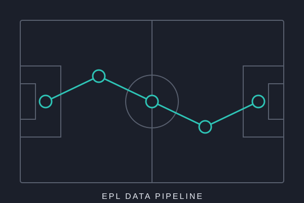
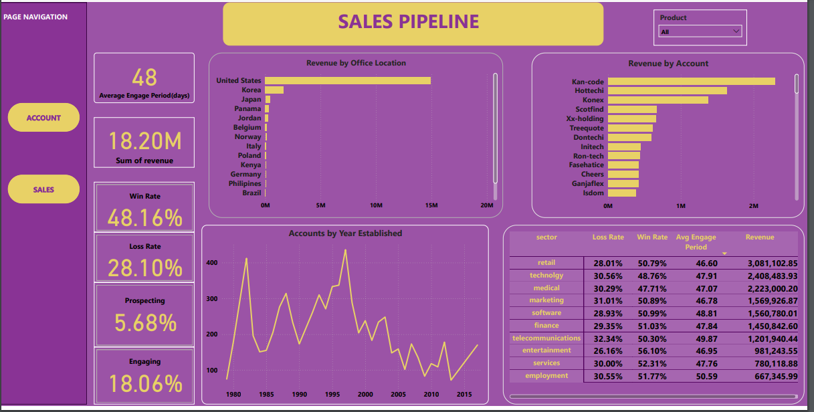
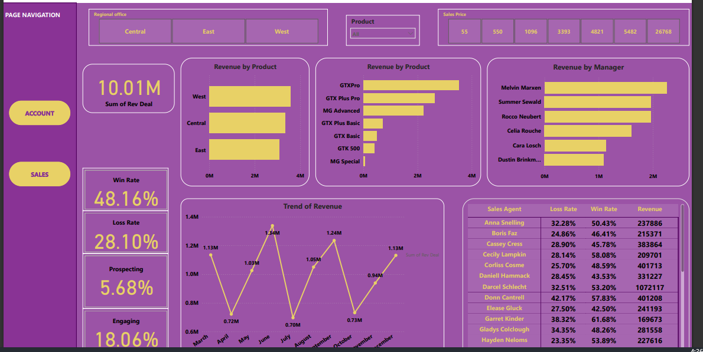
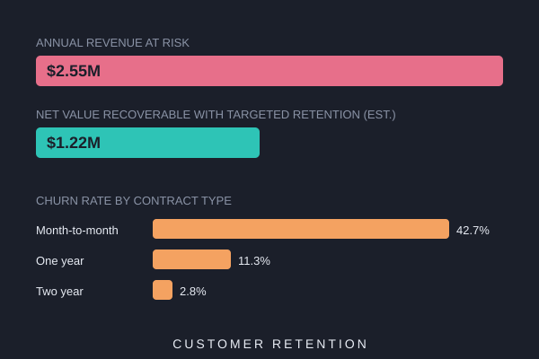

I'm a Business Intelligence Developer with 4+ years of experience in data. I build dashboards, extract and shape data for different departments, and design the business models and custom tables that reporting depends on. I pick up whatever tools the job needs to get data from source to decision, and automate the workflows around it.
I started out as a Reconciliation and Settlement Analyst, which taught me to be careful with numbers and to trace every figure back to its source. That habit still shapes how I build reports today.
I'm now growing into data and analytics engineering, and the projects below are part of that journey.



An interactive Power BI dashboard on B2B sales pipeline data from a fictitious hardware company. It covers revenue by office, region, sector, product and manager, plus win and loss rates (48.16% won, 28.10% lost), average engagement time (48 days) and sales agent performance. Retail was the top sector, with a 50.79% win rate.

An end-to-end churn analysis of 7,043 telecom customers (IBM sample dataset): cleaning, EDA, statistical testing and modelling. Logistic regression (AUC 0.839) caught 78% of churners against 49% for random forest. Contract type was the strongest churn driver, and the business case estimates about $1.2M in net annual value from targeted retention offers.

Built on BigQuery's public thelook_ecommerce dataset. SQL extraction, Python feature engineering, K-Means clustering (k=4) and Isolation Forest anomaly detection on about 10,000 customers, with a rule-based layer that assigns each customer a segment, action, channel and offer. The final table is written back to BigQuery.